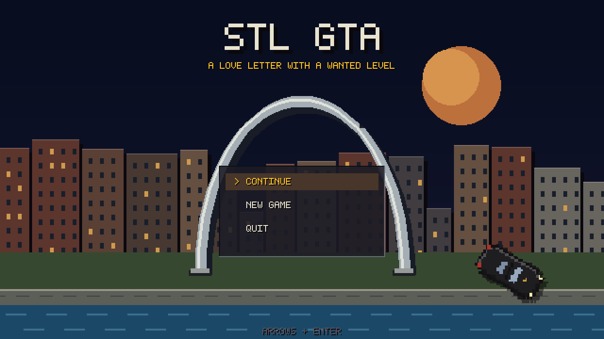
Devlog · top-down driving sandbox
A love letter with a wanted level
A GTA1-style driving sandbox set in a compressed, stylised St. Louis — the Arch on the riverfront, Gravois cutting the grid at forty degrees, frozen custard on Chippewa. Every pixel in it is drawn by code at startup. There are no art files.
The map is six thousand four hundred pixels square and traces real geography: the Mississippi down the east side with two bridges over it, a midtown spine running west from downtown to Forest Park, the Delmar Loop up in the north-west, the Hill and Tower Grove down in the south. Compressed, not to scale, and recognisable in the hand.
The street grid is deliberately irregular. County blocks out west are long, downtown blocks are short, and every line carries a real name. Three arterials refuse the grid entirely — Gravois, Manchester and West Florissant run at an angle across everything, because that is the single most St. Louis fact about driving here.
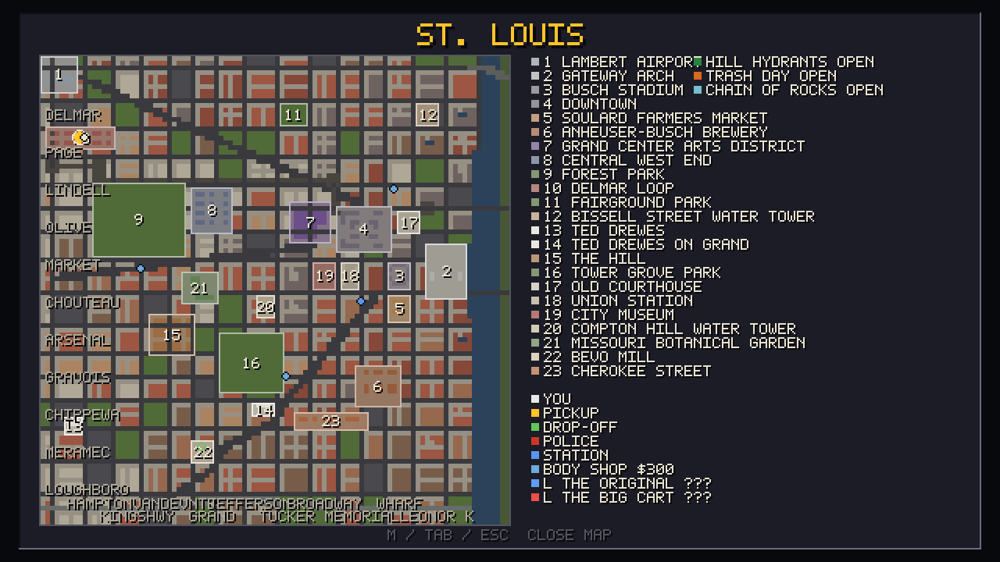
Each landmark is a hand-written composition rather than a stamped building, and several contain places worth naming in their own right. The reference under each shot is its true position in the tile grid.
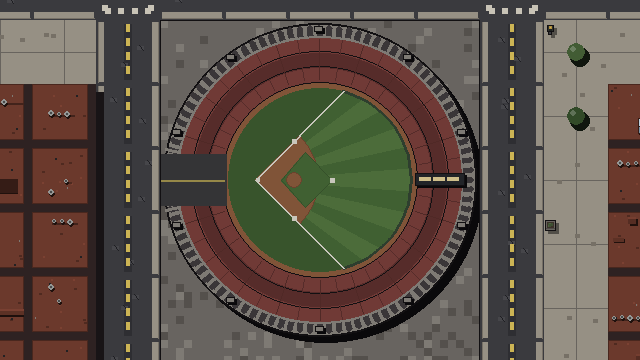
Busch Memorial Stadiumtile 76,46
Busch II, 1966–2005. Edward Durell Stone crowned it with a ring of arches answering Saarinen’s, a few blocks east. Drawn at the real count.
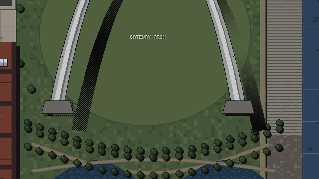
Gateway Arch4th St · tile 86,46
In plan only the two leg footings are solid. The catenary is drawn over the top of everything, and its shadow is a dither stipple so the grass reads through.
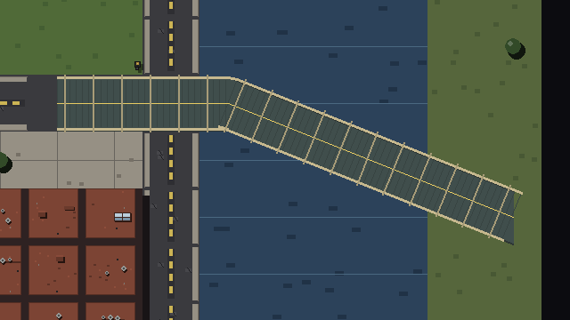
Old Chain of Rocks Bridgetile 95,3
A twenty-two degree kink mid-river, which is the only thing anybody outside St. Louis knows about this bridge. It turns once, where the real one turns.
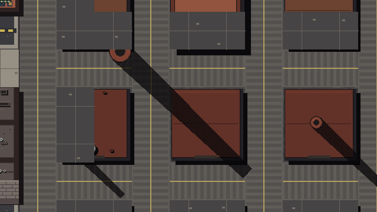
Anheuser-Busch Brewerytile 71,70
Cherokee and Meramec pass straight through it as yard lanes. One hundred and forty-odd brick structures over a hundred and forty-two acres, and you can drive the middle of it.
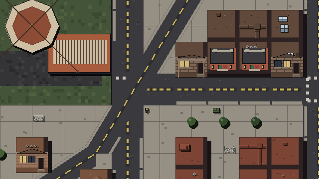
Gravois Avetile 38,86
The diagonals are drawn as one continuous polyline, and the tiles they reserve are derived from that same band — so the asphalt you can see and the road you can drive are one decision.
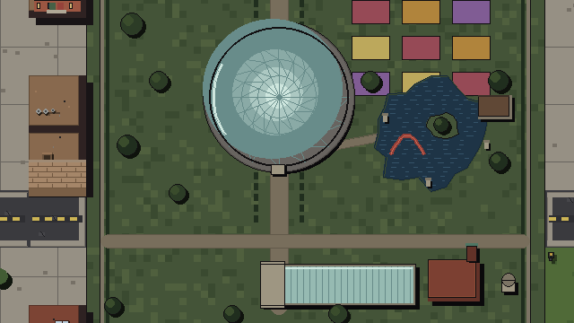
Missouri Botanical GardenShaw · tile 33,49
Buckminster Fuller’s dome, 1960, the first geodesic conservatory. Seiwa-en beside it is real water you have to go round.
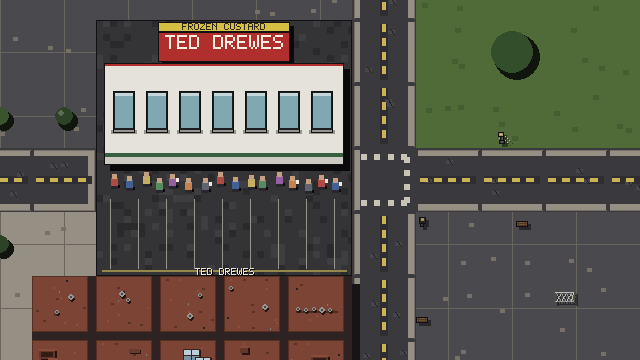
Ted DrewesChippewa St · tile 8,79
This is the Chippewa one. The other is on Grand. People will correct you about this, so both are on the map.
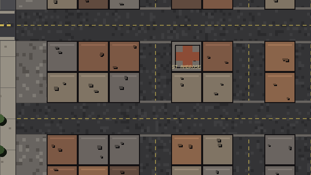
The HillArsenal St · tile 27,59
Every corner. It is the first thing anybody from here notices about the neighbourhood, so the hydrants get repainted at the draw site.
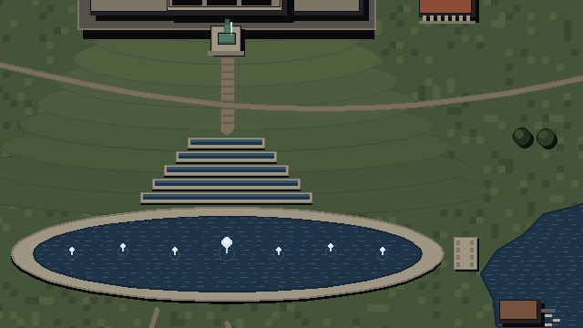
Forest Parktile 20,34
And St. Louis will tell you so unprompted. Art Hill terraces down to the Grand Basin in four banded stops; the basin is water you go round.
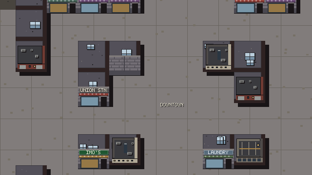
Downtown14th St · tile 68,36
Broadway and Tucker used to stop dead inside the district. No street with a name and two lanes ends in a wall any more.
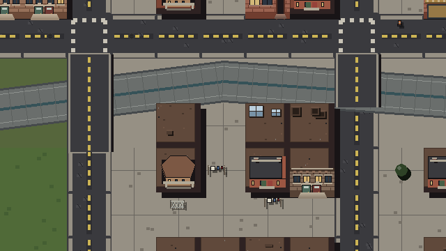
River des PeresBevo · tile 40,95
The concrete channel along the southern edge. Sixteen named streets bridge over it rather than vanishing into it.
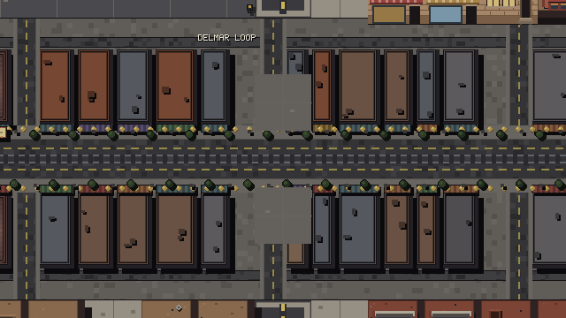
Delmar LoopSkinker Blvd · tile 9,17
Rails inset into Delmar, no separate right-of-way and no gates — and it stops after two miles, like the real one.
The recent work has mostly been making the picture and the collision map agree with each other. Every figure below was measured before and after, because “it feels better now” is not a number.
| What was wrong | Was | Now |
|---|---|---|
| Buildings standing inside the painted diagonals | 53 tiles | 0 |
| Named street walled off by a landmark | 39 tiles | 0 |
| Open ground sealed away from the streets | 4 tiles | 0 |
| Hits one spike strip took off a single car | 9 | 1 |
| Longest ramp of invisible colour steps in the art | 38 | 3 |
| Tiles a car cannot drive off, anywhere on the map | — | 0 of 28,640 |
Painting the Chain of Rocks one sixty-four-pixel tile at a time, each with a rail along its own top and bottom edge, turned its famous bend into a flight of four stairs. Deck and railings are one polyline now.
The Climatron was a thirty-nine step radial gradient, neighbouring shades two or three values apart — invisible as steps, and the single biggest departure from the 8- and 16-bit look anywhere in the project. It is four separated bands now, which is also the more honest reading of a dome made of flat triangular panels.
A spike hit deliberately scrubs your speed and cripples your steering — which is exactly what keeps you sitting on the strip a second later, to be hit again. One strip was taking nine bites out of the same car. A strip shreds a given car once now.
Three hundred and twenty tests pass. Alongside them is a playtest rig that prints numbers rather than passing or failing — turning radius against speed, whether a flat-out escape exists at each wanted level, how much of the population is actually on screen, and a sweep that stands a car on every reachable tile at four headings to find any it cannot drive off.
A five-minute soak with police, traffic and pedestrians live runs eighteen thousand frames with no exceptions and no leaks. Nothing drops a frame against the sixty-per-second budget, even in a five-star chase with roadblocks and eight simultaneous explosions.
Still to do: audio has never been exercised properly, the gamepad paths are untested, and no amount of scripted driving substitutes for someone actually playing it. That part comes next.
Every mission, job and challenge walked to its payout; twenty-three malformed save files fed to the loader; every weapon measured against its own declared range.
Banded the gradients, dithered the cast shadows. An alpha-blended shadow invents a new colour for every surface it crosses; a stipple adds none.
The scripted driver was blind inside Forest Park, so half of every chase was spent grinding a lake. Fixing it raised mean speed from 41% of top to 73%.
A squared-off horseshoe of flat red tiles became a true circle with three decks and the crown of ninety-six arches.
Fifty-three buildings standing in the middle of three arterials, and thirty-nine tiles of signposted street that were solid brick.
Built in Python and pygame — one file, twenty-one thousand lines, no art assets. Source at github.com/lrgerke-max/STL-GTA. Every screenshot on this page is the game rendering itself at 640 × 360 and scaled up with nearest-neighbour, which is how it is meant to be seen.